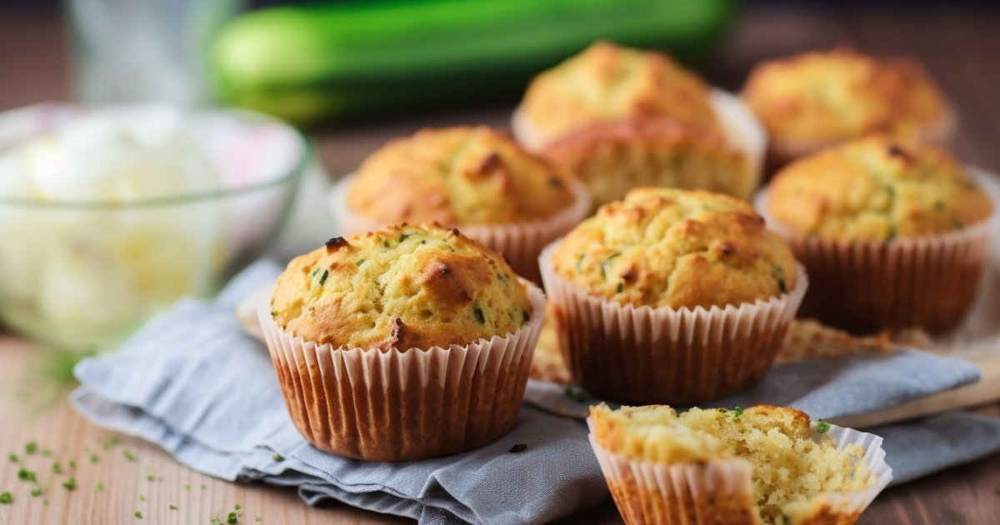

Яблучні мафіни
35 хв
Легко
35 хв

40 хв
50 хв

2-3 год

1 год
1 год

2 год

1 год
50 хв

1 год

1 год

~1 год
Час приготування: 35 хв
Складність приготування: Легко
Кількість порцій: 15 порцій
Просіваємо борошно. Змішуємо його з цукром, корицею, розпушувачем і сіллю.
Збиваємо в окремому посуді молоко, яйце і олію до однорідності.
Яблука очищаємо від шкірки, нарізаємо на маленькі кубики і додаємо до рідкої суміші.
Акуратно змішуємо рідку і суху суміші. Важливо не перемішувати занадто довго, щоб кекси добре піднялися.
Викладаємо тісто у формочки на 2/3 висоти. Якщо використовуєте залізну форму, змастіть її вершковим маслом. Силіконові формочки змащувати не потрібно.
Випікаємо у розігрітій до 180°C духовці 20-25 хвилин. Готовність перевіряємо зубочисткою: якщо вона виходить сухою, мафіни готові.
Подавайте яблучні мафіни теплими або охолодженими, за бажанням прикрасивши цукровою пудрою або глазур'ю.
Час приготування: 40 хв
Складність приготування: Середньо
Кількість порцій: 15 порцій
У глибокій мисці змішайте сир із яйцями.
Додайте цукор та манну крупу. Ретельно перемішайте до однорідності.
Сформуйте з отриманої маси 15 однакових кульок.
Закип’ятіть воду в каструлі, додайте сіль. Обережно опустіть сирні кульки у воду й варіть протягом 5 хвилин після спливання на поверхню.
Обсмажте панірувальні сухарі на сухій сковороді до золотистого кольору та додайте цукор.
Вийміть гомбовці з води, обкачайте їх у підсмажених сухарях.
Подавайте теплими або охолодженими.
Час приготування: 45 хв
Складність приготування: Середньо
Кількість порцій: 1 порція
Всі інгредієнти повинні бути кімнатної температури.
Додайте до білків дрібку солі та воду. Почніть збивати міксером на середній швидкості.
Поступово додайте 200 г цукру, продовжуючи збивати до утворення стійких піків.
У жовтки додайте 50 г цукру. Збийте міксером до світлої та однорідної маси.
Акуратно додайте збиті жовтки до білків. Перемішуйте лопаткою рухами знизу вгору.
Просійте борошно разом із розпушувачем. Поступово додавайте до яєчної суміші, обережно перемішуючи до однорідності.
Перелийте тісто у форму, застелену пергаментом або змащену маслом.
Випікайте в розігрітій до 180°C духовці протягом 30–40 хвилин.
Після 25 хвилин перевірте готовність дерев'яною зубочисткою. Якщо вона виходить сухою — бісквіт готовий.
Злегка відкрийте дверцята духовки та залиште бісквіт на 5–10 хвилин для поступового охолодження.
Час приготування: 2-3 години
Складність приготування: Складно
Кількість порцій: Від 15 та більше
У мисці змішайте цукор, яйця, корицю, імбир, соду, ванільний цукор і мед.
Помістіть миску на водяну баню (каструля з киплячою водою). Помішуйте масу протягом 10 хвилин, слідкуючи, щоб дно миски не торкалося води.
Додайте масло і перемішуйте, поки воно повністю розтане, а маса стане більш повітряною.
Зніміть з вогню, додайте 1 склянку борошна і перемішайте до однорідності. Дайте охолонути.
Коли маса охолоне, поступово додайте решту борошна, замішуючи тісто. Воно має бути еластичним, пишним і трохи липким.
Загорніть тісто у харчову плівку і залиште на 30 хвилин при кімнатній температурі. Якщо плануєте випікати наступного дня, покладіть у холодильник.
Перед випіканням дайте тісту зігрітися 10–15 хвилин при кімнатній температурі.
Розкатайте тісто на пергаментному папері, щоб уникнути деформації фігурок під час перенесення. Якщо розкатуєте на іншій поверхні (стіл чи кондитерський килимок), трохи присипте її борошном.
Виріжте фігурки формочками. Товщина тіста визначає структуру пряників: тонкі – більш рівні та щільні, товстіші – пишніші та м’якші.
Розігрійте духовку до 180 °C.
Випікайте пряники 8–10 хвилин, уважно слідкуючи, щоб не перепеклися.
Збийте білок із цукровою пудрою протягом 10–15 хвилин до отримання гладкої маси.
Якщо глазур занадто рідка, додайте ще трохи цукрової пудри; якщо густа – розведіть її водою або лимонним соком.
Прикрасьте пряники готовою глазур’ю.
Час приготування: 1 година
Складність приготування: Середньо
Кількість порцій: 15 порцій
Очистіть приблизно 400 г гарбуза, наріжте шматочками і викладіть на деко.
Запікайте у розігрітій до 180 °C духовці 40–60 хвилин, поки гарбуз не стане м’яким.
Щоб отримати густе пюре, перекладіть гарбуз у марлю, добре відіжміть рідину і збийте блендером до однорідної консистенції.
Просійте борошно разом із розпушувачем, содою, сіллю і спеціями.
В окремій мисці змішайте яйця, цукор і олію, злегка збийте вінчиком.
Додайте гарбузове пюре, перемішайте до однорідності.
Введіть сухі інгредієнти у вологу суміш, ретельно перемішайте до отримання однорідного тіста.
Заповніть форми для капкейків тістом на 2/3 об’єму.
Випікайте у розігрітій до 180 °C духовці 30–35 хвилин, поки капкейки не стануть золотистими і пружними.
Покладіть вершковий сир, вершки та цукрову пудру у чашу для збивання.
Збивайте на середній швидкості 3–5 хвилин, поки не утвориться щільна, однорідна і повітряна маса, що добре тримає форму.
Після охолодження капкейків прикрасьте їх кремом за допомогою кондитерського мішка або ложки.
Час приготування: 1 година
Складність приготування: Легко
Кількість порцій: 1 порція
У миску насипте манну крупу, залийте кефіром і добре перемішайте.
Залиште суміш набухати від 30 хвилин до 2 годин (чим довше, тим краще).
У іншій мисці розімніть вершкове масло виделкою.
Додайте цукор і перетріть масло із цукром до однорідної маси.
Вбийте яйця і ретельно перемішайте.
З’єднайте набухлу манну крупу із масляно-яєчною сумішшю.
Додайте розпушувач, сіль і за бажанням кокосову стружку або інші добавки. Добре перемішайте.
Змастіть форму для випікання вершковим маслом.
Перелийте тісто у форму.
Випікайте у розігрітій до 180 °C духовці близько 25 хвилин, поки манник не стане золотистим і пружним.
Перед подачею можна посипати готовий манник цукровою пудрою, прикрасити ягодами або полити варенням.
Час приготування: 2 години
Складність приготування: Середньо
Кількість порцій: 1 порція
У мисці збийте яйця з цукром до пишної маси.
Додайте борошно, какао і розпушувач. Перемішайте до однорідності.
Застеліть деко пергаментом.
Викладайте ложкою невеликі порції тіста у вигляді кружечків, залишаючи відстань між ними.
Випікайте у розігрітій до 180 °C духовці 7–10 хвилин до готовності.
Розм’якшене вершкове масло збийте з цукром до пишності.
Не припиняючи збивати, поступово додайте сметану. Збивайте до отримання однорідного крему.
Розтопіть шоколад із вершковим маслом на водяній бані або в мікрохвильовці, помішуючи до однорідності.
Кожен кружечок обмокніть у кремі з обох боків.
Викладайте кружечки на тарілку у формі гірки.
Зверху полийте глазур’ю.
Дайте торту настоятися в холодильнику протягом кількох годин, краще залишити на ніч.
Час приготування: 1 година
Складність приготування: Легко
Кількість порцій: 1 порція
У мисці змішайте олію і молоко, відставте вбік.
Борошно просійте разом із розпушувачем, також відставте.
Яйця розділіть на білки і жовтки.
Збийте білки міксером на середній швидкості до стійких піків, поступово додаючи 70 г цукру.
До жовтків додайте сіль і 50 г цукру, збийте до пишної маси і збільшення об'єму.
Обережно змішайте жовткову масу із білковою, вливаючи жовткову масу у білкову рухами знизу вгору.
Поступово введіть борошно із розпушувачем у кілька прийомів, продовжуючи акуратно перемішувати.
У суміш олії і молока додайте трохи готового тіста, перемішайте.
Влийте молочно-олійний розчин у тісто і знову акуратно перемішайте.
Вилийте тісто у форму, застелену пергаментом, і розрівняйте поверхню.
Випікайте у розігрітій до 180 °C духовці близько 15 хвилин, поки бісквіт не стане рум'яним.
Вийміть бісквіт із форми та зніміть пергамент.
Ще теплий бісквіт намажте медом або обраною начинкою.
Сформуйте рулет, загорнувши його в пергамент.
Покладіть рулет у холодильник на 1 годину для стабілізації.
Експериментуйте з начинками – джем, згущене молоко або креми на ваш смак зроблять рулет унікальним.
Час приготування: 50 хвилин
Складність приготування: Легко
Кількість порцій: 12–16 порцій
Просійте всі сухі інгредієнти: борошно, розпушувач, крохмаль і додайте сіль.
Змішайте сир кімнатної температури з яйцями, розмішайте виделкою.
Додайте розтоплене вершкове масло, цукор, ванільний цукор і цедру лимона.
Збийте суміш блендером до однорідної маси.
У два заходи додайте сухі інгредієнти, ретельно та акуратно перемішуючи лопаткою.
Заповніть форми для кексів на 2/3 об’єму.
Випікайте у розігрітій до 170–180 °C духовці 25–30 хвилин без конвекції.
Орієнтуйтеся на свою духовку. Готовність перевіряйте після 25 хвилин.
Час приготування: 1 година
Складність приготування: Легко
Кількість порцій: 1 порція
Родзинки промийте, залийте кип’ятком і залиште на 20 хвилин.
У мисці змішайте манну крупу зі сметаною (3 ст. л.) і залиште набухати на 30 хвилин або більше.
Сир протріть через сито або збийте блендером.
Додайте набухлу манну крупу зі сметаною, цукор, ванільний цукор, сіль та яйця. Перетріть масу (можна використовувати міксер або блендер).
Злийте воду з родзинок, обсушіть і додайте в сирну масу. Перемішайте.
Форму змастіть маслом. Викладіть сирну масу, розрівняйте та змастіть 2 ст. л. сметани.
Випікайте у розігрітій до 180 °C духовці 40–45 хвилин.
Час приготування: 1 година
Складність приготування: Легко
Кількість порцій: 1 порція
Яблука помийте, обсушіть і наріжте тонкими слайсами.
Збризніть лимонним соком, щоб вони не потемніли, і перемішайте.
У мисці збийте яйця міксером до пишної піни, поступово додаючи цукор.
Збивайте до отримання густої пишної маси.
Просійте борошно на збиту масу і акуратно перемішайте круговими рухами знизу вгору.
Форму змастіть вершковим маслом.
Вилийте половину тіста, викладіть яблука, потім додайте залишок тіста та розрівняйте(або змішайте тісто з яблуками й викладіть у форму).
Випікайте у розігрітій до 180 °C духовці 35–40 хвилин.
Під час випікання не відкривайте духовку.
Шарлотка готова, коли зверху з’явиться світло-коричнева скоринка.
Час приготування: ~1 година (з підйом тіста)
Складність приготування: Легко
Кількість порцій: 1 кг тіста
У каструлі змішайте воду, рослинну олію, цукор і сіль.
Доведіть суміш до кипіння, зніміть з вогню та залиште остигати до теплого стану.
Додайте до остиглої рідини пресовані дріжджі.
Залиште на 5 хвилин, щоб дріжджі активувалися, і перемішайте до повного розчинення.
Поступово додавайте борошно до рідкої основи, замішуючи тісто.
Замішуйте до тих пір, поки тісто не перестане липнути до рук (або буде лише злегка липким).
Викладіть тісто в миску, накрийте харчовою плівкою або рушником.
Залиште в теплому місці на 30 хвилин або довше, поки тісто не збільшиться вдвічі.